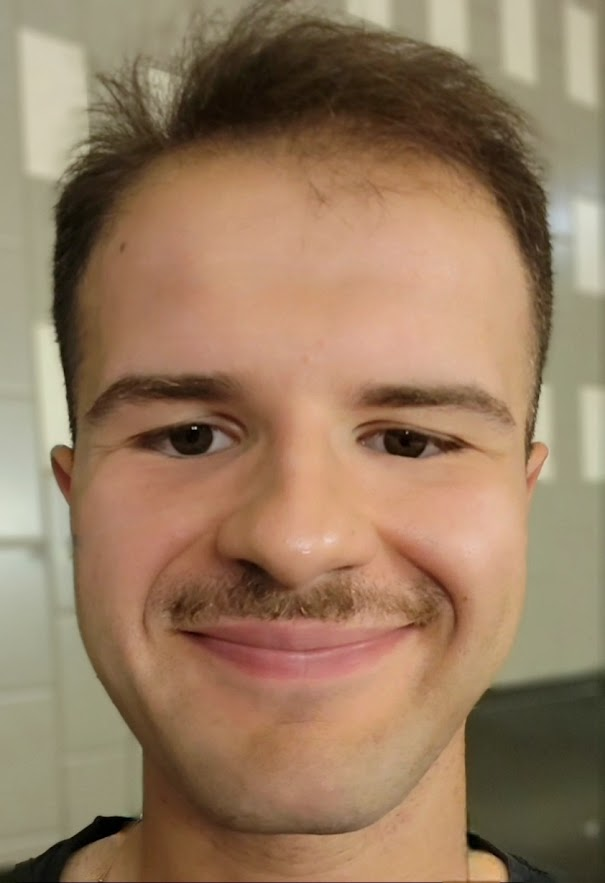

James Bolis

Summary
I am a Computer Science student at University of Maryland Global Campus while serving active duty in the Marines. I hold a secret clearance and work in satellite communications. In addition, I am currently on an internship with the Department of Veteran's Affairs, where I work on web development.
Education
- University of Maryland Global Campus, Computer Science, GPA 4.0 (June 2022 - December 2024)
Work Experience
Projects
Project Agatha
- AGATHA (AI Generative Art Transforming Human Advancement) is a virtual art gallery for the public. Each collection has a specific theme and uses a photo-realistic approach to produce lifelike images.
- The project's goals are to develop different strategies to allow AI to understand user prompts.
Skills
- DoD Secret Clearance
- Satellite Systems
- Python
- Java
- C++
- WordPress
- SQL, MySQL, PostgreSQL
- Front-end Development
Other
My Hobbies
Contact Me